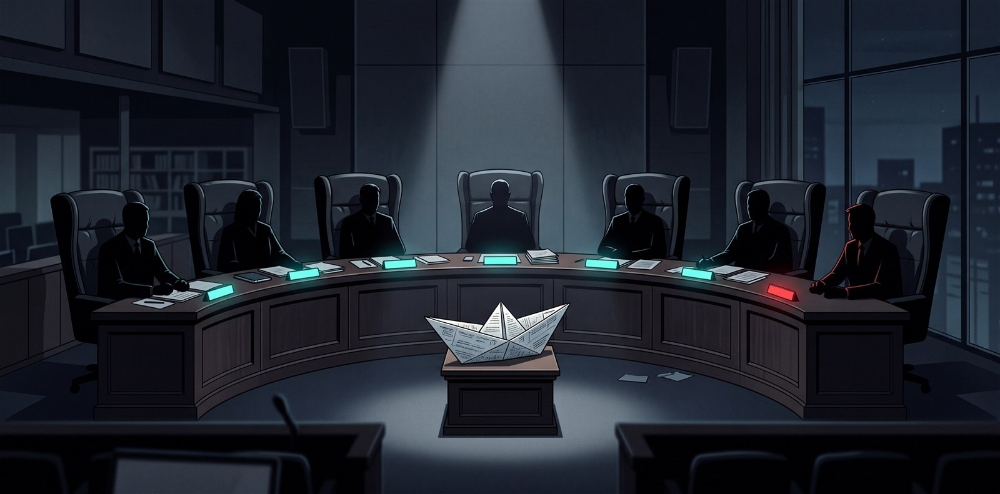

An open protocol · MIT · zero install
The AI council that won’t tell you it’s great.
Ask an AI to evaluate your project and you get flattery. Ask the Shiproom and you get seven adversarial seats — CTO, CFO, VC, CMO, CEO, your target customer, and a Chair — each mandated to find the strongest reason your project fails before saying what would change its mind.

The problem
“Be brutally honest” lasts two turns.
Prompt-level honesty collapses back into agreement — the model wants to please you, whatever costume it wears. You can’t prompt your way out of sycophancy. So the Shiproom doesn’t change the model’s tone; it changes the structure it argues inside.
Evaluate my idea: a marketplace for left-handed scissors.
What a compelling niche! The TAM is genuinely inspiring, and your unique angle positions you perfectly. This could really take off! 🚀
No revenue mechanism, no moat, and I will not launder the vocabulary to avoid saying so.— the VC seat, voting to shelve this very project
The bench
Seven seats. Seven ways to kill a bad idea.
Each seat carries a kill mandate and argues in sequence — reacting to the seats before it, by name. Select a seat to read its mandate and how it actually voted in Docket #001, the verdict this project passed on itself.
Quotes are verbatim from the published verdict — unedited, per protocol.
Why it works
The rules do the work the adjectives can’t.
Kill mandates
Every seat must make the case for failure first. Praise is only allowed after the seat has genuinely tried to bury you.
A sourced fact base
Competitors, pricing, comparable outcomes — gathered and cited before deliberation. Claims without sources are struck; unverifiable numbers are labeled ESTIMATE.
Forced engagement
Every seat must explicitly agree or disagree with a prior seat, by name. This is what stops seven monologues from pretending to be a debate.
Pre-committed verdicts
Every seat ends with a vote — INVEST / SHIP_AND_SEE / SHELVE — plus the one metric that would flip it. Thresholds are written before you know the outcome, never edited after.
The unanimity alarm
A unanimously cheerful run is treated as a failed run. If every seat agrees your idea is great, the council didn’t work — and the repo ships a drift canary to catch exactly that.
Run it
Zero install, or the full courtroom.
1. paste SHIPROOM.md into any capable AI — Claude, ChatGPT, Gemini, Cursor, anything
2. add a description of your project + your real constraints
3. receive a verdict you’re not allowed to soften
One self-contained markdown file. No install, no account, no telemetry. This mode exists because the customer seat refused to git clone a repo to ask a question — the verdict forced the feature.
Adds web-verified fact bases, structured verdict.json output, the interactive verdict page, and a zero-dependency CLI for the plumbing — the thinking stays in your agent.
/shiproom run the deliberation — seat by seat, resume-safe
/shiproom grill the appeal — the seats question YOU
/shiproom verdict render the verdict page
/shiproom docket publish it, scars and all
Five commands with resumable state — quit mid-grill tonight, resume at the same seat tomorrow. Your agent runs the council in your language: an Italian founder’s bench argues in Italian.
Grill mode
The verdict judges your documents.
The grill judges you.
Each seat questions you directly, one question at a time. Answers must be numbers, facts, names, or decisions — “we believe strongly in our vision” doesn’t parse. Answer well and seats revise their votes; the Chair re-tallies. Frank, not cruel: the protocol bans insults and theatrics. Specificity is the aggression.
You said “strong early interest.” How many of the twelve users came back in week two?
Dodge a question twice and it goes in your verdict, word for word, as an open wound. The scar tissue is the point.
The docket
Published verdicts, starting with our own.
All seven seats run on one model, so treat every verdict as a hypothesis and its thresholds as the experiment that tests it — the protocol structures your decision; it can’t replace real market contact. What it can do is go on the record. Ran the council and willing to show the scars?
SHELVE verdicts especially welcome.
Getting roasted well is a badge of honor. PR your verdict folder into the Docket — it publishes unedited, dissent and all, next to the verdict this project passed on itself.